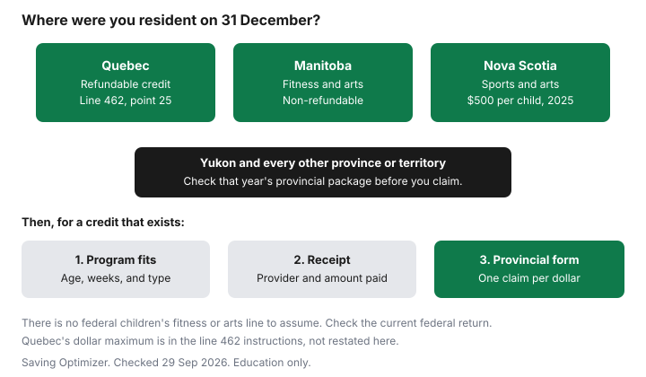

Kids · Canada
Children's Activity Tax Credits in Canada: Which Provinces Still Offer Them and How to Claim
A hockey registration or a music term is not a federal line you can assume is still there. A few provinces still have their own credit. The rest of the country should open the provincial package before typing a number from memory. This page uses Revenu Québec, Manitoba Finance, and the CRA's Nova Scotia package. Amounts are for the tax year those pages describe. It is not tax advice.
Disclosure: Tax software offers are an offer type. Saving Optimizer may earn a commission if a partner link is added later. No partnership is claimed. Software does not decide which province's credit applies. Education only. This is not tax advice. Confirm the claim with your province or the CRA.
Key takeaways
- Do not enter a federal children's fitness or arts amount unless it appears on the current federal return. Check the CRA.
- Quebec: a refundable credit if you lived in Quebec on 31 December 2025, family income does not exceed $168,470, and you have a receipt. The dollar maximum is in point 25 of the line 462 instructions, not on the overview page.
- Manitoba: non-refundable fitness and arts credits. The sections state a benefit of up to $54 per child, or $108 with the extra disability amount. Eligible costs claimed are up to $500.
- Nova Scotia: for 2025, up to $500 per child for a qualifying child under 19 on 31 December 2025, if you lived in Nova Scotia that day. Two supporters may split it. They may not exceed $500 together.
- Yukon and every other province: check that year's package. This guide does not quote a Yukon figure.
The federal children's fitness and arts credits ended; what remains provincially
Parents still search for a federal fitness credit. Do not put one on the federal return unless the current return shows the line. Check the CRA's federal package for the year you are filing. A number remembered from an older year is not a claim.
What remains is provincial, and only where that province still has a credit. Residence on 31 December is the test the pages below actually use. A family that moved in November uses the province they lived in at year-end, not the province where the arena sits. Quebec's page says you had to be resident in Quebec on 31 December 2025. Nova Scotia's package says you had to reside in Nova Scotia on 31 December 2025, and that someone who emigrated from Canada in 2025 cannot claim it.

| Province | Credit | Refundable? | Limit on the page | Age and where to claim |
|---|---|---|---|---|
| Quebec | Tax credit for children's activities | Refundable, as the page states | Family income not over $168,470 for the 2025 conditions. The per-child credit amount is in point 25 of the line 462 guide, not on the overview. | Eligible child, defined on the Revenu Québec page. Line 462 of the Quebec return. |
| Manitoba | Fitness tax credit, and children's arts and cultural activity tax credit | Non-refundable. The page says the credit reduces Manitoba tax otherwise payable. | Up to $54 a year per child or young adult, plus up to $54 more in the disability case, for a stated maximum of $108. Costs claimed up to $500. The summary table also shows $1,000 with a disability in the 2024 and 2025 columns. | Fitness: under 16, and young adults 16 through 24. Arts: children under 16. Who claims depends on age. See the sections below. |
| Nova Scotia | Children's sports and arts tax credit | The package does not use the word refundable in the section read here. Check the form. | $500 per child for 2025, the maximum that can be claimed. | Under 19 on 31 December 2025. Resident in Nova Scotia that day. Claim on the Nova Scotia return described in the CRA package. |
| Yukon | Check the CRA Yukon package, form 5011-pc, for the year you file. | Check the package. | No figure is quoted on this page. | Check the package. |
| Any other province or territory | Check that year's provincial or territorial tax package, or the finance ministry, before you claim a children's activity credit. | Check your province. | Check your province. | Check the provincial package before you assume a line, and before you assume there is none. |
Quebec's refundable credit for children's activities
Revenu Québec's page on the tax credit for children's activities says you can claim a refundable credit for physical activities or for artistic, cultural, or recreational activities of an eligible child, if every condition is met. You were resident in Quebec on 31 December 2025. In 2025, you or your spouse on 31 December 2025 paid either to register the child in a program that is not part of a school's curriculum, or to buy a membership.
The program has to include physical activities or artistic, cultural, or recreational activities for children, over at least eight consecutive weeks, or at least five consecutive days. The page gives a summer camp as the example of the five-day test. A membership in a club, association, or similar organization has to be for at least eight consecutive weeks and has to offer those activities. Your family income must not exceed $168,470. You need a receipt that proves the registration or membership fees, and you keep it in case Revenu Québec asks.
The overview does not print the per-child dollar maximum of the credit. It sends you to point 25 in the instructions for line 462 in the guide to the income tax return (TP-1.G-V). Claim from that point, not from a number you remember. A school-curriculum program is outside the test the page states. A week of camp can fit the five-day rule. The same week might also be a child care expense. Do not claim the same dollar twice. The child care deduction is a federal deduction with its own rules. If both could apply, read both pages before you enter the fee.
Manitoba's fitness and arts amounts
Manitoba Finance's personal tax credits page lists two non-refundable credits. The fitness credit is for children under 16 and for young adults aged 16 through 24.
The page says the cost of up to $500 in eligible fitness activities may be claimed per child or young adult. The credit itself is an annual non-refundable benefit of up to $54 per child or young adult. It reduces Manitoba income tax otherwise payable. It is not a refund of the registration fee.
An additional $54 for a child or young adult with a disability may be available if at least $100 is spent on fitness, and the page says that increases the maximum credit to $108. For someone under 18 at year-end, the child or young adult or their parent may claim. For a young adult 18 to 24 at year-end, the young adult, spouse, or common-law partner may claim. Eligible costs are registration or membership fees, and the page says they may include administration, instruction, rental of required facilities, and uniforms and equipment that are not available to be acquired by participants for the program's exclusive use in the wording that follows on that page. Read the rest of the fitness section before you include a jersey you keep.
The arts credit is separate. It is for children under 16, for eligible non-fitness activities: artistic, cultural, recreational, or developmental. The page again states a non-refundable benefit of up to $54, on costs of up to $500. An additional $54 for a child with a disability under 18 may be available if at least $100 is spent, increasing the maximum credit to $108. The summary table near the top of the same page shows $500, and $1,000 with a disability, in both the 2024 and 2025 amount columns for each credit. Use the section text and that table together, and do not treat $500 as cash back. The page also says that, except where noted, the credits in that block are multiplied by the bottom rate of 10.8 percent. The $54 figure is what the fitness and arts sections print as the benefit.
Nova Scotia and Yukon credits
The CRA's Nova Scotia income tax package, page details 20 January 2026, includes a children's sports and arts tax credit for fees paid in 2025. You, or your spouse or common-law partner, paid a person or partnership for registration or membership of a qualifying child in an eligible program, or in a club, association, or similar organization. The program can be inside or outside Nova Scotia. The maximum that can be claimed for 2025 is $500 per child.
A qualifying child had to be under 19 on 31 December 2025. You had to reside in Nova Scotia on that day. You cannot claim amounts paid to your spouse or common-law partner, or to someone under 18. Eligible fees include administration, instruction, certain uniforms, certain equipment, and rental of required facilities. They do not include accommodation, food, travel, or beverages. Subtract non-taxable reimbursements and allowances. If you and another person support the same child, you can split the claim. The total of both claims cannot be more than $500. If you cannot agree who claims, none of you can claim.
The program has to be supervised and meet a duration test: at least six consecutive weeks with qualifying activities in all or substantially all of the weekly activities, or at least five consecutive days with more than 50 percent of the daily activities qualifying, or at least eight consecutive weeks in a club where more than 50 percent of the time or of the activities qualify. It also has to be an artistic or cultural discipline, a wilderness and natural-environment focus, intellectual skills, structured interaction that develops interpersonal skills, or significant physical activity. For a child eligible for the disability amount, physical activity has to be recreational and involve movement and an observable use of energy. Horseback riding can count. Riding in or on a motorized vehicle does not. The package is the full test. This paragraph is the shape of it.
Yukon is a different package, the CRA's 5011-pc page. This guide does not quote a Yukon limit, a line number, or an age rule. Open that package for the year you file, or check with the CRA, before you claim or before you decide Yukon has no credit.
What counts as an eligible program and the receipt you need
Write the receipt test before you pay, not in April. You want the provider's name, the child's name, the program name, the dates or the number of weeks, and the amount paid for registration or membership. Separate the fee from a jersey you keep, a hotel, and a meal plan, because Nova Scotia excludes food, travel, accommodation, and beverages, and Quebec is about registration or membership fees. A single invoice that mixes a week of overnight camp with a costume is two questions, not one number.
| Check | Quebec | Manitoba | Nova Scotia |
|---|---|---|---|
| Lived there on 31 December | Yes, 31 December 2025 on the page | Claim is against Manitoba tax. Confirm residency on the return. | Yes, 31 December 2025 |
| Length | Eight consecutive weeks, or five consecutive days | Read the eligible-program definition on the finance page | Six weeks, five days, or eight weeks in a club, as the package states |
| School curriculum | Program must not be part of the school's curriculum | Check the page | Registration or membership in an eligible program or organization |
| Receipt | Proof of eligible fees. Keep it. | Registration or membership cost | Fees paid to a person or partnership. Not food, travel, accommodation, or beverages. |
| Same fees, two claims | You or your spouse paid. Do not double the fee. | One claimant, by the age rules | Split allowed. Combined total cannot exceed $500. |
Child care and an activity credit answer different questions. Daycare that exists so you can work is the federal deduction on line 21400. A Saturday art class may be an activity credit in a province that has one, and it may fail the child care test if it is instruction rather than care. The folio's sports-camp paragraph is on the summer camp guide. If a fee could be either, pick the line the law allows and do not use it twice. The tax software guide is about who prepares the return, not about which line wins.
Other help if your province has no credit
A missing credit is not the same as a missing subsidy. Canadian Tire Jumpstart and KidSport Canada publish their own eligibility.
This guide does not quote their income cut-offs or their grant maximums. Check Jumpstart and KidSport, and check the city's recreation subsidy, before you assume the registration is all yours. Municipal programs change by city. The recreation guide is the document, not a national table.
If the province has no credit, the fee is a spending choice. Put the season in a sinking fund the way the zero-based budget guide treats a bill you can see coming, instead of hoping a credit will appear in April. Equipment you buy to keep is usually outside these credits. Nova Scotia's exclusion of ordinary costs such as food and travel is a reminder to read the invoice. A credit that reduces tax otherwise payable, which is how Manitoba describes its $54, does nothing in a year you owe no Manitoba tax. A refundable credit, which is how Quebec describes its credit, is a different shape. Know which one you are filing.
Sources & date stamps
- Revenu Québec, Tax credit for children's activities, checked 29 Sep 2026. Refundable. Resident in Quebec on 31 December 2025. Fees paid in 2025 by you or your spouse. Eight consecutive weeks, or five consecutive days. Family income not over $168,470. Receipt. Line 462, point 25 in TP-1.G-V, for the amount and the rest of the rules. The overview does not state a per-child dollar maximum.
- Manitoba Finance, personal tax credits, checked 29 Sep 2026. Fitness and arts credits are non-refundable. Up to $54, or $108 with the additional disability amount. Costs up to $500. Summary table shows $500 and $1,000 with a disability in the 2024 and 2025 columns. Bottom rate 10.8 percent except where noted. Fitness ages under 16 and 16 through 24. Arts for children under 16.
- CRA, Nova Scotia income tax package 5003-pc, page details 20 January 2026, checked 29 Sep 2026. Children's sports and arts tax credit. Maximum $500 per child for fees paid in 2025. Under 19 on 31 December 2025. Resident in Nova Scotia that day. Split claims cannot exceed $500 in total. Eligible and excluded fees as in the text.
- Yukon: check the CRA Yukon package, 5011-pc, for the year you file. No Yukon amount is stated here.
- Jumpstart and KidSport: eligibility and amounts are on those sites. None are quoted here.
Frequently asked questions
Is there still a children's fitness tax credit in Canada?
Check the current federal return before you enter a children's fitness or arts amount. This guide confirmed provincial credits for Quebec, Manitoba, and Nova Scotia on the pages in the sources. Yukon and the other provinces need their own package. Education only.
Which provinces have a children's activity tax credit?
Quebec has a refundable credit claimed at line 462, with the amount in point 25 of the guide, and Manitoba has non-refundable fitness and arts amounts. Nova Scotia's 2025 package lets you claim up to $500 per child for sports and arts. For Yukon, open the CRA's Yukon package. For every other province, check that province.
What programs qualify?
Quebec requires a program outside the school curriculum, or a membership, lasting at least eight consecutive weeks, or at least five consecutive days for a camp-style program. Nova Scotia requires a supervised program that meets a weeks test or a five-day test, and a qualifying activity such as arts, wilderness, or physical activity. Manitoba separates fitness from non-fitness arts and cultural activities. Read the page for the province where you lived on 31 December.
What receipt do I need?
Quebec requires a receipt that proves the registration or membership fees, and tells you to keep it. Nova Scotia describes eligible fees such as instruction and certain equipment, and excludes food, travel, accommodation, and beverages. Keep the provider's name, the child's name, the dates, and the amount paid. Check the provincial instructions for anything else they ask you to hold.
Can both parents claim the same child's activities?
Nova Scotia says two people who support the same child may split the claim, but the total cannot exceed the $500 maximum, and if you cannot agree then nobody claims. Manitoba allows a parent or the child to claim, depending on age, and does not say both parents claim the full amount. Quebec's page is about fees you or your spouse paid, so one set of fees is one claim. Confirm on the form.
Researched and drafted with AI assistance and fact-checked against official Canadian sources. How we create content.